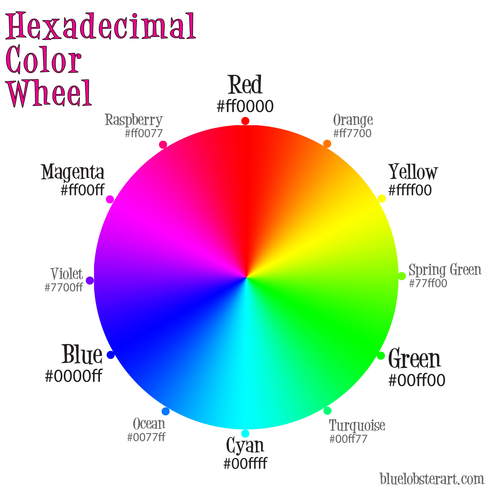

این کد رنگ در تمامی براوزرهای اینترنت پشتیبانی می شود.  کد رنگ هگزا دسیمال با این فرمت شناخته شده است:RRGGBB مقادیر رنگ های قرمز، سبز و آبی به ترتیب از 00 الی FF می باشد که شدت رنگ را در نقطه FF می شناسیم.